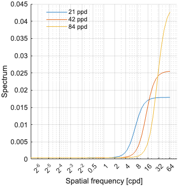
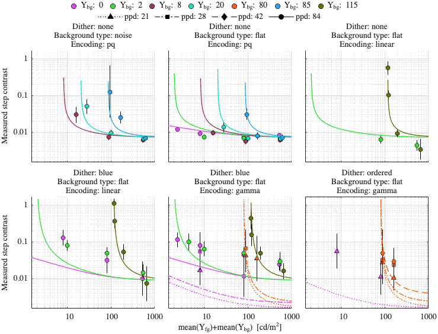
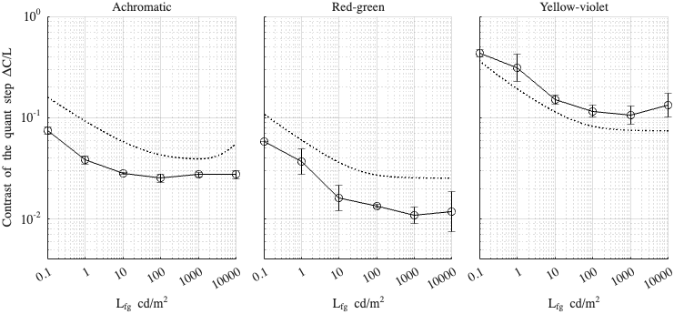

Fitting config: dither_spd, model: daly_masking_freq_pool
Fitting error (RMSE): 0.374507
Model parameters
p.beta = 1.05176; p.gs_num = [ 0.537599 0.178366 0.960583 ]; p.noise_params = [ 0.000173371 1.1875 0.330936 1.05184 ]; p.dither_amp_params = [ 4.92297 0.857232 ]; p.blue_dither_params = [ 0.342173 3.77053 0.000414634 0.222698 ];
Model components
Blue noise dither spectrum

Dataset: [ar2025]
Scaling factor: 0.585039

Dataset: [kim2020]
Scaling factor: 1.60879
